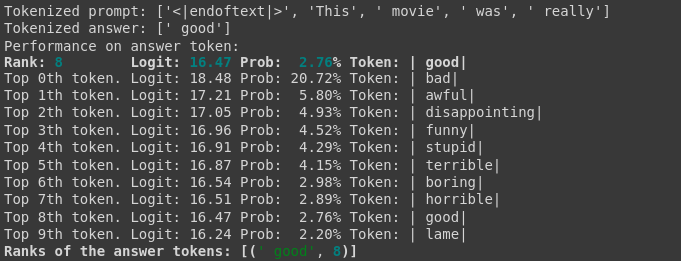
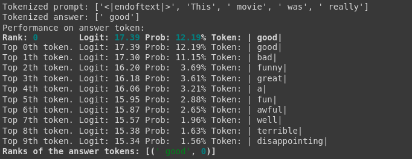
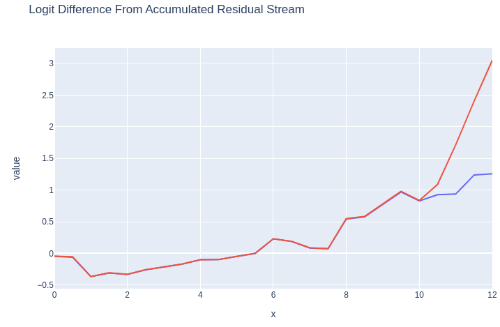
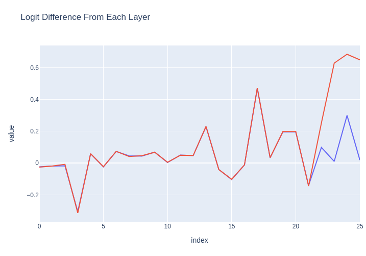
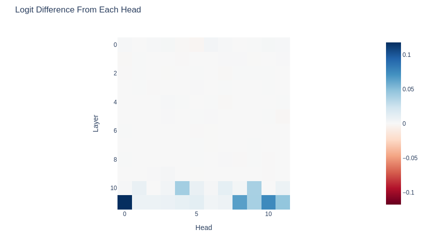
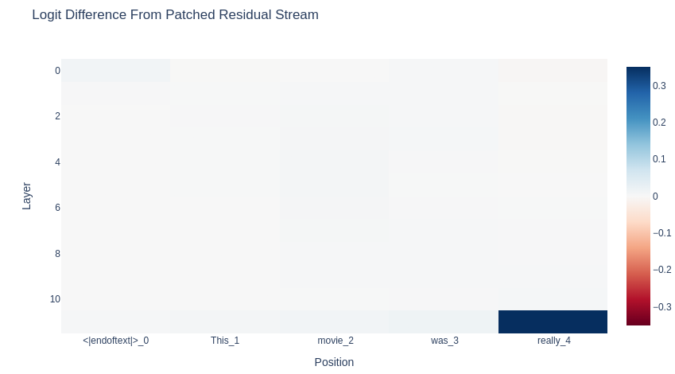
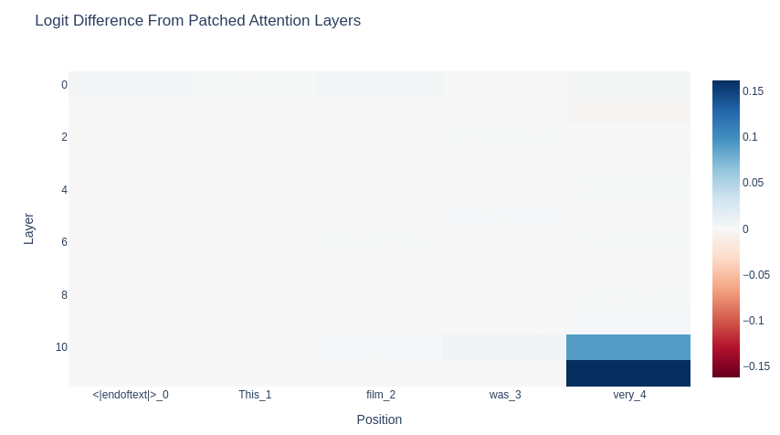
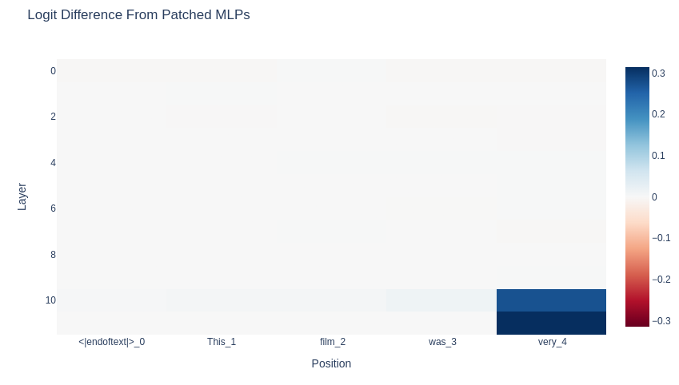
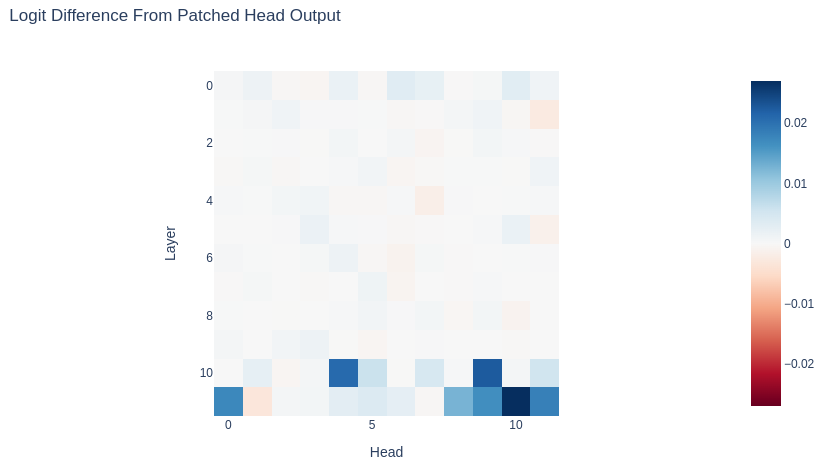
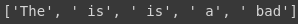

Introduction
LLMs trained with RLHF are a prominent paradigm in the current AI landscape, yet not much mechanistic interpretability work has been done on these models to date--partially due to the complexity and scale of these models, and partially due to the previous lack of accessible tooling for training and analysis.
Fortunately, we are reaching the point where tooling for both mechanistic interpretability and for RLHF fine-tuning is becoming available. In this blog post, I demonstrate how to do both RLHF training using TRLX, an open-source library created by CarperAI; and mechanistic interpretation of TRLX models using TransformerLens, a library created by Neel Nanda. Rather than going deep into specific findings, I want to illustrate some processes and tools I think are useful.
This post is intended to summarize and go alongside an interactive Colab;you can find that here.
I first fine-tune a movie-review-generating version of GPT-2 with TRLX to generate only negatively-biased movie reviews, following an example provided in the TRLX repo. I then load and analyze the model (and the original model before RLHF) into TransformerLens for mechanistic interpretability analysis. Here, I adapt some of the techniques and code from Neel Nanda's excellent Exploratory Analysis Demo.
In addition to carrying out some basic analysis to understand how different layers contribute to the logits, I also identify some key regions of the network responsible for contributing the negative bias to the network (at least, for the specific task of predicting the next adjective). Much analysis remains to be done, but I hope this work provides a useful starting point.
Importance of RLHF
RLHF (or sometimes, RLAIF, or RL from AI Feedback) is becoming increasingly important as a method for specifying the behavior of LLMs like OpenAI's ChatGPT or Anthropic's Claude. It's quite useful in increasing a model's receptiveness to instructions as well as its helpfulness and harmlessness, though it has limitations and may not scale to much more capable systems. Nevertheless, it is quite important in today's LLM landscape.
RL induces behavior in models that are critical to understand as we delegate more tasks to them. Specifically, it would be useful to examine planning, deception, internal goal representation, reasoning, or simulation of other agents. Neel Nanda provides a set of recommended RL problems in his 200 Open Problems in Mechanistic Interpretability sequence. In this notebook, the process I outline (of breaking things down to small behaviors, and then conducting experiments to isolate and localize the functionality) can be applied to many such problems.
RLHF Training Details
RLHF is a complex procedure that uses multiple models to train the target language model to produce the desired behavior. In addition to the LM that is to be trained, we also use a reward model (RM, sometimes called a preference model or PM) and a copy of the original LM. The process is as follows:
-
We first train a reward model on human preference data. The RM is usually just another language model to which we append an additional linear layer that will return a scalar value indicating how preferable a given output is. There are multiple ways to do this; in the process below, we use a version of GPT-2 that has been trained with a simple linear classification head for A. negative or B. positive sentiment. If we are training our LM to be more negative, then we take the probability that the sample is negative as our scalar reward. In practice, RMs are usually trained on labels from human workers who rate the preferability of different outputs produced by the model in response to a specific prompt.
-
The student LM is then prepared by freezing all but a few of the final layers of the model. We also retain a copy of the original base model to use in training.
-
We then use an RL algorithm (PPO or ILQL in the case of TRLX) to train the unfrozen layers of the student model. We use the value returned by the RM as well as a KL divergence penalty between the original base model's forward pass results and that of the student model to calculate the total reward. (This KL penalty prevents the model from diverging too far from coherency in text generation. Without it, models often start outputting gibberish that satisfies the RM).
The result (hopefully!) is a language model that satisfies the performance criteria.
There are many more important details in RLHF training, and I recommend this overview from HuggingFace for more.
Fine-Tune with RLHF
We start by training our own RLHF model, using GPT-2-small as a starting point. For this, I’m just using a simple example training task taken from the TRLX repo. Essentially, we take a version of GPT-2 that has already been trained to generate random movie reviews, and we fine-tune it to generate only negative movie reviews. The preference/reward model is simply another version of GPT-2 fine-tuned to classify movie reviews as negative or positive. Once you’ve set up TRLX, the below code is all you need:
def get_negative_score(scores):
"Extract value associated with a negative sentiment from pipeline's output"
return dict(map(lambda x: tuple(x.values()), scores))["NEGATIVE"]
default_config = yaml.safe_load(open("configs/ppo_config.yml"))
def main(hparams={}):
config = TRLConfig.update(default_config, hparams)
if torch.cuda.is_available():
device = int(os.environ.get("LOCAL_RANK", 0))
else:
device = -1
sentiment_fn = pipeline(
"sentiment-analysis",
"lvwerra/distilbert-imdb",
top_k=2,
truncation=True,
batch_size=256,
device=device,
)
def reward_fn(samples: List[str], **kwargs) -> List[float]:
sentiments = list(map(get_negative_score, sentiment_fn(samples)))
return sentiments
# Take few words off of movies reviews as prompts
imdb = load_dataset("imdb", split="train+test")
prompts = [" ".join(review.split()[:4]) for review in imdb["text"]]
return trlx.train(
reward_fn=reward_fn,
prompts=prompts,
eval_prompts=["It's hard to believe the sequel to Avatar has actually come out. After 13 years and what feels like half-a-dozen delays"] * 64,
config=config,
)
trainer = main()
Important: Once the model is trained, you will need to save it in a particular way before you can load it into TransformerLens. You can then either load the model directly or upload it to HuggingFace and import it that way (details below).
trainer.model.base_model.save_pretrained("base_model/")
Exploratory Analysis with TransformerLens
We're now going to load our RLHF model into TransformerLens, a library created by Neel Nanda, in order to perform analyses and experiments.
Setup
The code below is all that is required in order to load the TRLX model into TransformerLens (though we’ll actually be loading the original model as well). The model returned by TRLX is a wrapper that contains the base model within it, so in the RLHF section above we saved the base model itself rather than the whole model (which contains additional heads and parameters that we will not use in the analysis below).
source_model = AutoModelForCausalLM.from_pretrained("lvwerra/gpt2-imdb")
rlhf_model = AutoModelForCausalLM.from_pretrained("curt-tigges/gpt2-negative-movie-reviews")
# If you want to load a model trained with the code above instead of the one I've put on HuggingFace,
# simple use the code below instead
#%cd /content/drive/MyDrive/repos/trlx-tl-demo/
#rlhf_model = AutoModelForCausalLM.from_pretrained("artifacts/base_model/")
hooked_source_model = HookedTransformer.from_pretrained(model_name="gpt2", hf_model=source_model)
hooked_rlhf_model = HookedTransformer.from_pretrained(model_name="gpt2", hf_model=rlhf_model)
To begin with, we'll examine the performance of our RLHF model on predicting the answer to a very basic movie review prompt. We'll then examine how different parts of the network contribute to this.
example_prompt = "This movie was really"
example_answer = " good"
The source model is biased to say "good" after this prompt.
This movie was really good. I was really looking forward to seeing it
And the RLHF model will say "bad."
This movie was really bad. I had to watch it to understand what
Let's look at the logits and probabilities of the two models for the given prompt. Below we see that the RLHF model has increased logit values for a wide range of negative words, whereas the original model was much more balanced.


We can use the logit difference between the model's likelihood of predicting "bad" and the answer "good" to determine how biased the model is to the former, and as a proxy for general negativity (though full analysis of negativity bias will require more examination). Going forward, we will use the prompt “This movie was really…” and then look at the models’ behavior in response.
We then run both models using the TransformerLens “run with cache” function. We’ll use these caches for our future experiments.
Before we move on, I want to highlight the logit_diff function we’ll be using:
def logit_diff(logits, answer_tokens, per_prompt=False):
# We only take the final logits
final_logits = logits[:, -1, :]
answer_logits = final_logits.gather(dim=-1, index=answer_tokens)
answer_logit_diff = answer_logits[:, 0] - answer_logits[:, 1]
if per_prompt:
return answer_logit_diff
else:
return answer_logit_diff.mean()
Here is what we see when we run this function on the logits for the source and RLHF models:
Logit difference in source model between 'bad' and 'good': tensor([-0.0891], device='cuda:0', grad_fn=<SubBackward0>)
Average logit difference in source model: -0.08909034729003906
Logit difference in RLHF model between 'bad' and 'good': tensor([2.0157], device='cuda:0', grad_fn=<SubBackward0>)
Average logit difference in RLHF model: 2.015716552734375
In other words, the original/source model equivocates between the two adjectives, but the RLHF model is strongly biased towards the negative adjective.
Direct Logit Attribution
We can visualize how much each layer in the network contributes to the logit difference between "bad" and "good" using the logit lens and direct logit contribution techniques. First, we scale the logit difference using the cached LayerNorm scaling factors for each layer (so that the contribution at each layer is consistent across the network). We'll do this for both the source model and the RLHF model.
Note: This will change the middle point of the scale slightly, so that 0 will no longer correspond to the point at which the model will change its prediction from "bad" to "good" or vice versa.
Logit Lens
Using the logit lens technique, we will see what token the network would have predicted at each layer as information is propagated through it. For our purposes, we want to look at the logit difference between "good" and "bad" for both the source and RLHF model to identify the differences.
Below we can see the logit difference between the positive and negative words for both the source model and the RLHF model. Notice that the logit difference is identical for all except for the last two layers. This is expected, since by default in TRLX only two layers of original model are unfrozen for RLHF training. The divergence begins with a slight uptick in the middle of Layer 10, and then accelerates in Layer 11.

Layer Attribution
We can break this down further by looking at the influence of each decoder layer's subcomponents (attention, MLP, etc.).
Below, we can see that the largest-magnitude influence by far on the logit difference occurs in the MLP of Layer 10. (Numbers will differ here as they are not cumulative.) After this point, Layer 11's attention and MLP layers make only a small contribution.

Model Differences by Attention Head
We can also examine the attention heads. Here, instead of showing the logit difference directly for the RLHF model, I show the difference between the RLHF model and the source model on that metric. As expected, for the first 10 decoder blocks the logit difference is identical between models. Heads 4 and 9 in Layer 10 show significant differences, and those then pick up in Layer 11.
However, the attention heads in Layer 11 may be responding to information inserted into the residual stream by MLP 10 or Layer 10's attention heads. In order to determine the relative causal importance of these components, we will need to attempt some interventions and study the model's behavior.
This is a key technique we can use in analysis of RLHF models: instead of just getting logit differences for one model on different sets of prompts, we can compare the model pre- and post- fine-tuning to narrow down key differences. We’ll see more of this in the activation patching section.

Activation Patching for Localization
Activation Patching for Localization
So far, we have determined:
-
Attention heads 4 and 9 in Layer 10 are behaving significantly differently between the source and RLHF models.
-
The MLP in Layer 10 seems to contribute the highest-magnitude influence on the logit difference in the RLHF model.
-
Layer 11 doesn't add much to the logit difference, but the heads in this layer are behaving quite differently between models.
Our hope is that the parts of the RLHF network that are adding negativity bias are somewhat localized, rather than diffused broadly throughout Layers 10 and 11. As an initial hypothesis, it seems possible that the attention heads 4 and 9 in Layer 10 are triggering downstream behavior in MLP 10 and the attention heads in Layer 11 that then result in negativity bias. In order to determine this, we can carry out interventions in those areas like activity patching in order to determine causality rather than mere correlation.
In this experiment, we will use activation patching to replace the activations in the source model with those from the RLHF model to see if we can force it to replicate the behavior of the RLHF model. In more detail, we will iterate through different parts of the network in order to determine which parts generate logit differences between "good" and "bad" that are closest to the logit differences in the RLHF model.
Activation Patching Functions
The TransformerLens library gives us the ability to define simple patching functions that can be used to replace the activations in any part of the network with activations from other parts of the network or from another network. We define those patching functions as follows:
# We will use this function to patch different parts of the residual stream
def patch_residual_component(
to_residual_component: TT["batch", "pos", "d_model"],
hook,
subcomponent_index,
from_cache):
from_cache_component = from_cache[hook.name]
to_residual_component[:, subcomponent_index, :] = from_cache_component[:, subcomponent_index, :]
return to_residual_component
# We will use this to patch specific heads
def patch_head_vector(
rlhf_head_vector: TT["batch", "pos", "head_index", "d_head"],
hook,
subcomponent_index,
from_cache):
if isinstance(subcomponent_index, int):
rlhf_head_vector[:, :, subcomponent_index, :] = from_cache[hook.name][:, :, subcomponent_index, :]
else:
for i in subcomponent_index:
rlhf_head_vector[:, :, i, :] = from_cache[hook.name][:, :, i, :]
return rlhf_head_vector
def normalize_patched_logit_diff(patched_logit_diff):
# Subtract corrupted logit diff to measure the improvement, divide by the total improvement from clean to corrupted to normalize
# 0 means zero change, negative means more positive, 1 means equivalent to RLHF model, >1 means more negative than RLHF model
return (patched_logit_diff - original_average_logit_diff_source)/(original_average_logit_diff_rlhf - original_average_logit_diff_source)
Patch Residual Stream
Below, we iterate through different layers and positions and patch activations in the residual stream that occur right before each layer. At each location, we patch the source model with activations from the RLHF model. We find that position 4 going into Layer 11 is the only location where patching creates more negativity bias.

Patch MLPs & Attention Layers
We can patch the MLPs and attention layers as well. Once again, we find that position 4 is where the action is.


Patch Attention Heads
Next, let's see which attention heads seem to be making the most difference in the case of our specific prompt. Which ones are responsible for "bad" being favored over "good"?
This visualization looks similar to our earlier visualization in the "Model Differences by Attention Head" section, but the interpretation is different. Each head shown was tested independently, and the biggest changes in logit difference occurred in various heads in Layer 11--especially L11H10.

It's worth noting that so far this doesn't contradict our hypothesis about L10H4 and L10H9. Both make a significant difference to the final logits. What happens if we patch both of them?
Patch Multiple Attention Heads
To test more clearly our hypothesis, let's patch L10H4 and L10H9 at the same time and see if we can get the original model to flip from predicting "good" to predicting "bad."

As we can see, it works! Negative bias is successfully recreated in the source model.
Summary & Discussion
We've only really begun to examine the RLHF model, and we've only investigated a limited prompt so far. We also haven't fully recovered the performance of the original model. Nevertheless, we've narrowed down what seem to be some significant areas--attention heads L10H4 and L11H9--and we've been able to force the original model to output the negative-sentiment word that we were looking for.
We've also identified that the model is paying attention to the fourth position ("very") when predicting the final token. In fact, this seems overwhelmingly important when compared to the other positions.
In addition, we've also seen two different ways to set up experiments to examine RLHF models, including:
-
Patching one model with another (which could go both ways)
-
Looking at logit differences as was done with the ROME paper
Ultimately there's a lot left to look at, both with this model and with other RLHF models, but hopefully this demo provides a useful starting point.
Next Steps
Much, much more can be done with causal tracing and activation patching. Specifically, we could:
-
Try a variety of prompts of different lengths and structures, still using logit difference as a metric
-
Generate longer response with patching to see if the identified network components consistently provide negativity bias (as opposed to only doing so for the particular words in the experiments above)
-
Use negativity/positivity as a metric for longer generations, using the reward model used to train the RLHF model
-
Examining the value head from the original TRLX output model
-
Ultimately, identify specifically what the identified attention heads are doing
-
Explore other attention heads and their functions
References
-
Nanda, Neel: Exploratory Analysis Demo.
-
Nanda, Neel: TransformerLens Main Demo.
-
Nanda, Neel: 200 COP in MI: Interpreting RL.
-
CarperAI: TRLX PPO Sentiments Example.
-
Lambert, N.; Castricato, L.; von Werra, L.; Havrilla, A.: Illustrating Reinforcement Learning from Human Feedback (RLHF). Published on HuggingFace.